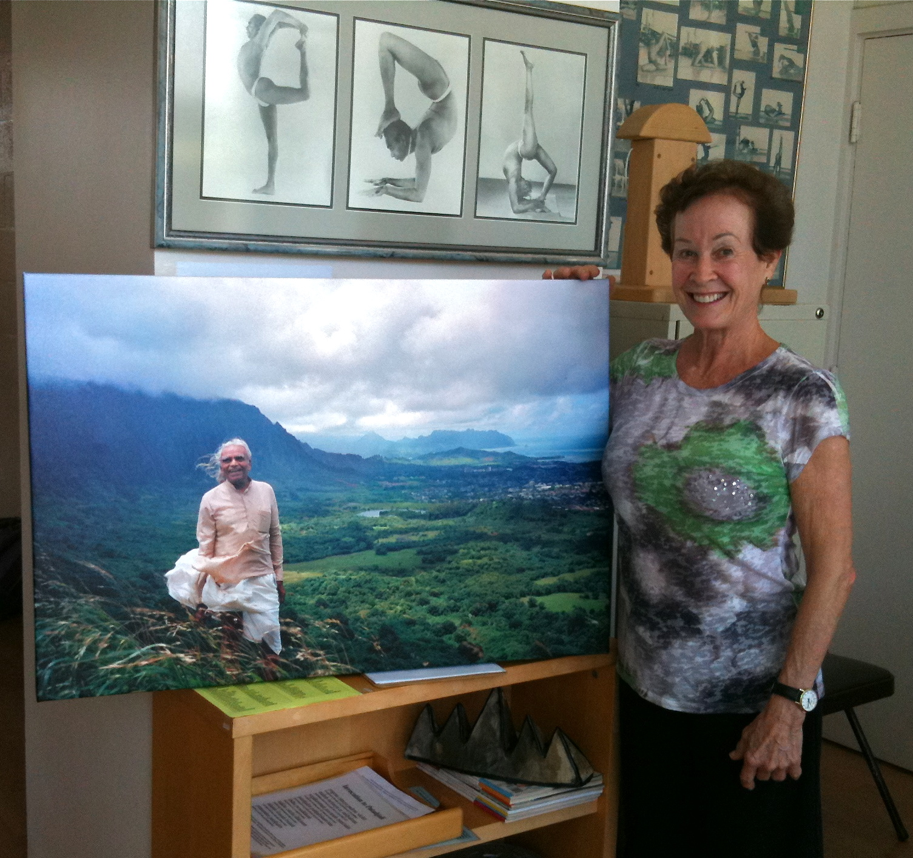
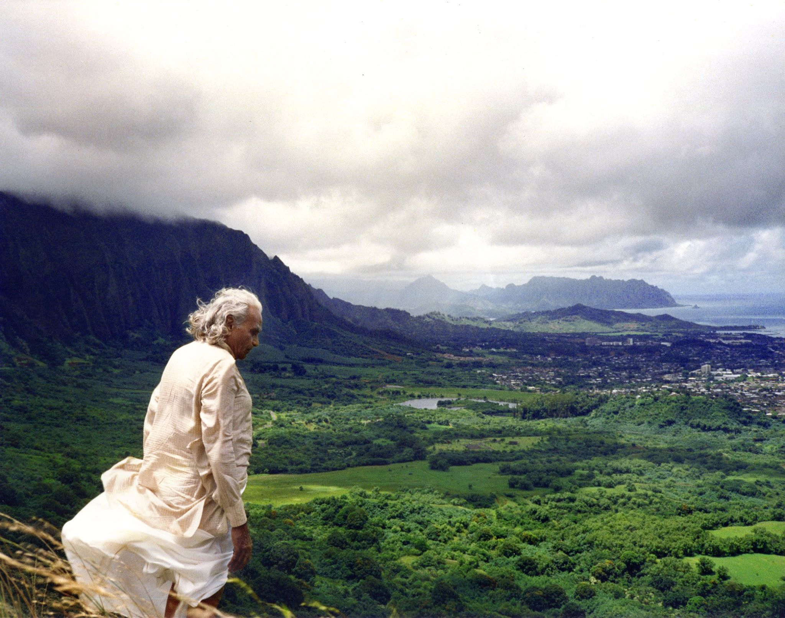

Hello my dear Geetaji and Prashantji,
Warmest greetings from Hawaii. I hope this finds you both well, classes smooth and successful, and all the family well. I think of you and Guruji daily and pray for you. I feel Guruji very close to me since his death. I am sure it has been a hard year for all of you and my heart goes out to you. Thank you so much for all you both do, and the family does, for all of us.
Today I am responding to your request for pictures, stories, etc. that might become part of the commemorative book on Guruji. I am so happy you are doing this! It is going to be so wonderful for the thousands of us who loved Guruji, had our lives change so deeply and were touched by his wisdom. Here is the story of the wonderful picture of Guruji (attached) that people from all over the world love. Most people have no idea where the location is or the story behind it. I have also attached a second picture taken in the same spot that many may not have seen. I released it to the public only upon his death.
Text for the story (Edit as you like):
Guruji arrived in Honolulu from India August 2, 1987 to stay with me for 4 days on his way to the Boston Convention. To my surprise, Ramanand Patel brought Jawahar Bangera, Birjoo Mehta, and Neeta Datta later that day to also stay with me. No one had cell phones then. I wish I had known they were coming so I could have prepared a nicer space for them. It was one of the best blessings in my life to have Guruji and all of them in my house. In the days they were here we saw many sights, went to the beach, had a luau at my house with Hawaiian music, hula dancers and a fire dancer. Guruji blessed our yoga center, Silent Dance Center, with his presence. He loved Hawaii! One visit we made was to the Koolau mountains and the famous Pali lookout. That is the site of this picture that has been loved around the world. The lookout is at the top of very steep mountains that divide the Honolulu side of Oahu from the Windward side. The views there of the windward side are breathtaking. We walked to the official lookout and to my surprise and worry, Guruji lept over a chain barricade that said DO NOT GO PAST THIS POINT. Well, we all followed. At the Pali, fierce winds whip so hard that they can knock you over. He walked closer to the cliff edge. The brush on the land hides the actual edge of the cliff. Battles were fought here where warriors were pushed off to their deaths. I was SO worried a false step might take Guruji down the cliff! But he was free-spirited and happy, his robes flying in the wind, his face lit up with pure joy. When he turned back toward us, I said, “Please may I take your picture?” And that is the story behind this now-famous picture.
I wish you all many blessings and honor you for all you have done and are doing. Thank you.
Fondest aloha,
Penney Sing
Honolulu, Hawaii